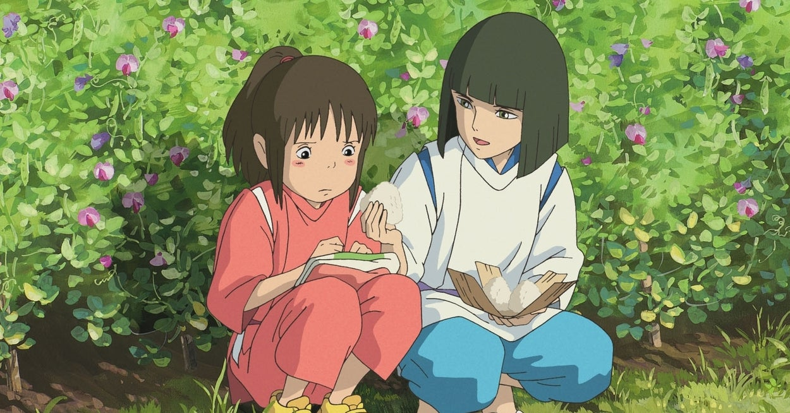
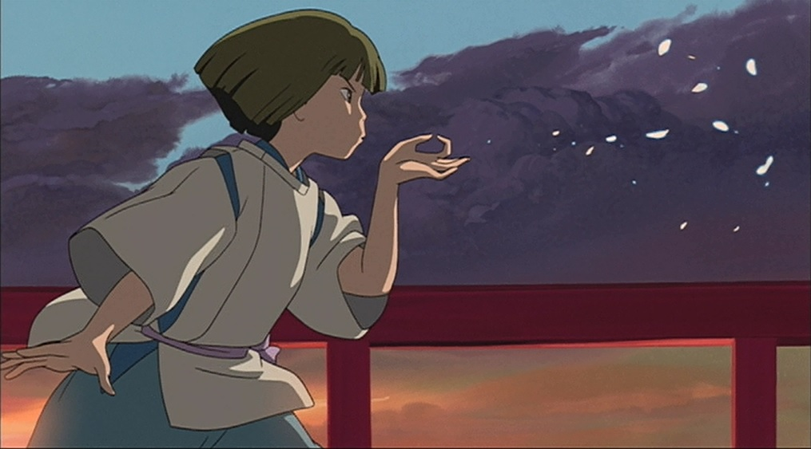

About Haku
He is a lost river spirit that also can take the form of a white dragon. However, he is not always so composed, and he exhibits both bravery and real sadness.
Haku's Characteristics
- He is very stern,but not heartless by any means.
- He is very kind
- He is very mysterious


This is Haku in action